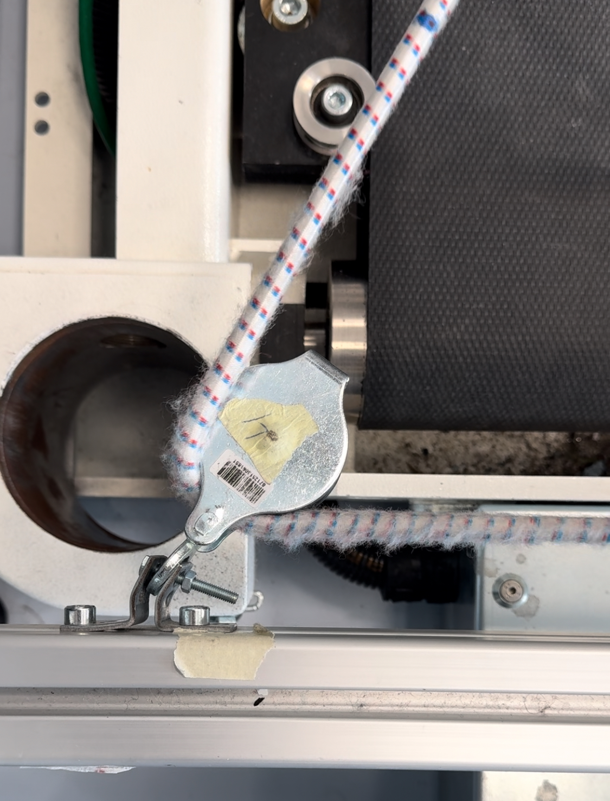
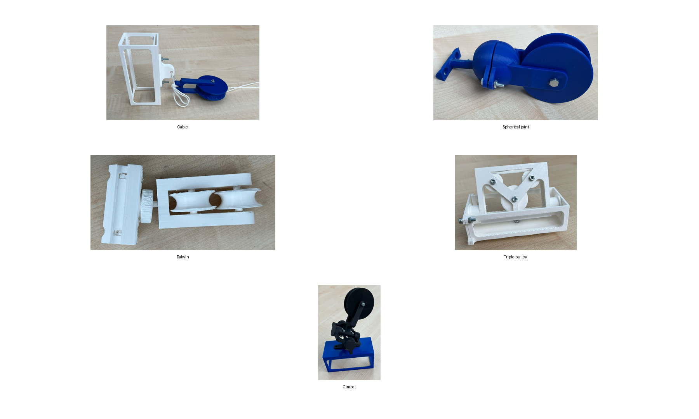
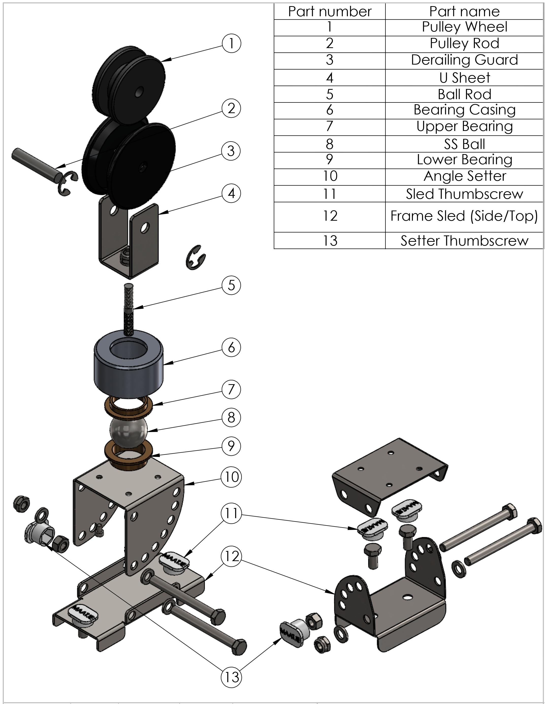
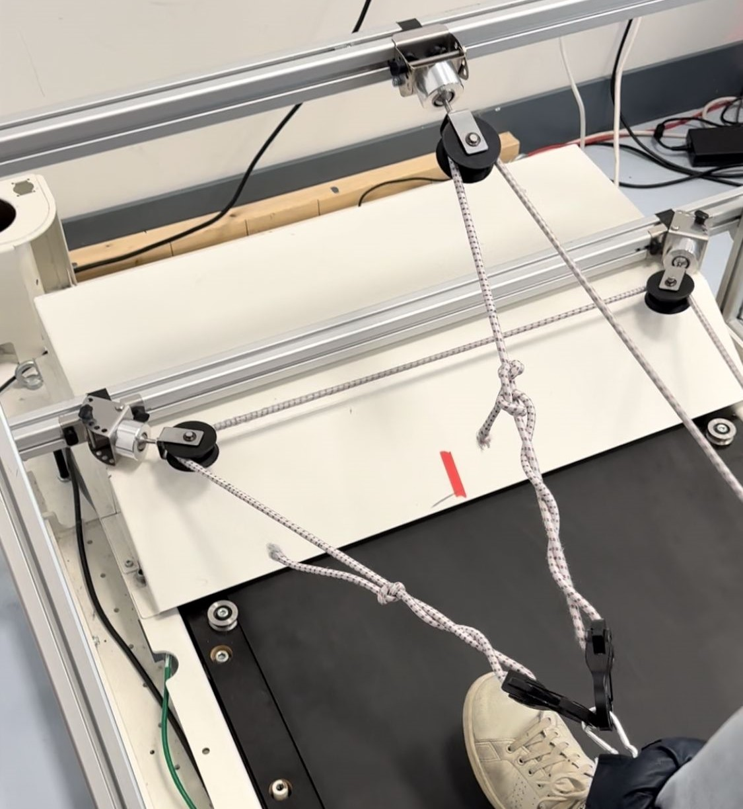

Analyse the old setup and determine the required tendon angles, loads, usability constraints and main failure modes.
Bachelor End Project · Mechanical Engineering · TU Delft · 2024
MATE Pulley System Redesign
Redesign and validation of a pulley mount system for the MATE, a passive tendon-based gait rehabilitation device. The project focused on allowing the pulleys to follow changing tendon directions while reducing derailing, wear and improving usability.

8.5 / 10
Final Bachelor End Project grade
0 derailments
Observed with the final design during the 30-second validation tests
42° measured
Maximum pulley operating range during testing, within the 50° design range
The system
What is the MATE?
The MATE, or Minimally Actuated Tendon-based exercise Environment, is a rehabilitation device developed to support gait training after stroke. A patient walks on a treadmill while elastic tendons are connected to the legs and routed through a system of pulleys.
As one leg moves backwards, the tendon arrangement helps guide the opposite leg forwards. This creates a coordinated walking pattern while avoiding the need for a large actively actuated exoskeleton.
The original problem
The pulleys could not properly follow the tendons
During walking, the direction of each tendon continuously changes. The old pulley mounts were largely fixed in orientation and could therefore not follow this movement sufficiently.
As a result, the tendons could leave the pulley groove and derail. This caused additional friction, chafing and visible wear to both the tendons and pulleys. The redesign therefore needed to guide the tendon over its full range of motion while minimizing derailment and improving adjustability.

Design process
From requirements to a validated mechanical design
Develop multiple pulley and joint concepts and compare them using weighted performance criteria.
Manufacture 3D-printed concepts to inspect movement, geometry and possible failure modes early in the design process.
Translate the selected spherical-joint principle into a functional prototype that could be mounted on the MATE frame.
Improve weight, durability, friction, adjustability and tendon guidance, followed by experimental validation.

Final design
A 3-DOF pulley mount that follows the tendon direction
The final design uses a spherical-joint principle so the pulley head can rotate in three degrees of freedom and align itself with the changing tendon direction. The mount is adjustable along the aluminium frame and its mounting angle can be set for different pulley positions.
The design was further refined with stainless-steel sheet components, an aluminium bearing casing, low-friction bearing surfaces and a derailing guard. Compared with the first machined prototype, the final assembly was reduced from 0.580 kg to 0.387 kg.


Validation
Testing the design instead of stopping at CAD
Motion capture and IMU
Camera footage and an IMU mounted to the pulleys were used to investigate pulley orientation and verify that the design could follow the required tendon motion.
Derailment testing
The old corner pulleys derailed repeatedly during the 30-second tests. No derailments were observed with the final product.
Force sensing
Load cells were used at both ends of a tendon to investigate pulley friction and compare the old and redesigned arrangements.
Finite element analysis
SolidWorks FEA was used to evaluate structural behaviour under the expected pulley loads and support geometry and material decisions.
Demo
The final pulley system in operation
Final design operating on the MATE rehabilitation setup. Video playback is muted.
Technology
SolidWorks
CAD
FEA
3D Printing
Machining
ESP32
IMU
Force Sensors
Python
C++ / Arduino
Experimental Validation